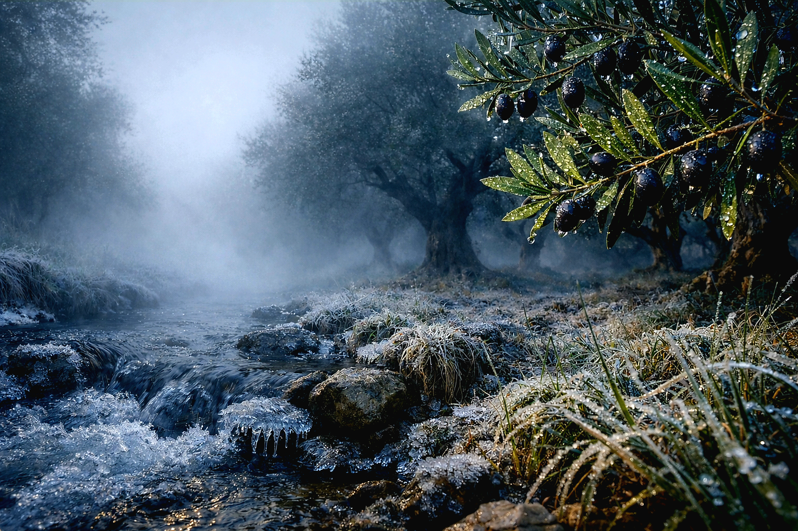

GEÇMİŞTEN İZLER


🌿 TARIM VE GEÇİM KAYNAKLARI
Köyümüzde tarım, uzun yıllar boyunca temel geçim kaynağı olmuştur. 2000’li yıllara kadar köy ekonomisi büyük ölçüde tütün üretimine dayanmaktaydı. Tütün, hem üretim miktarı hem de ekonomik katkısı açısından köy halkının en önemli gelir kaynağıydı. 2000’li yıllardan sonra ise tarımsal faaliyetlerde önemli değişimler yaşanmıştır.

Bu dönemde bir süre haşhaş üretimi yapılmış, ardından zeytin yetiştiriciliği ön plana çıkmaya başlamıştır. Özellikle zeytin, bölgeye uygun yapısı sayesinde köyde yaygınlaşan önemli bir ürün haline gelmiştir. Son yıllarda ise açılan sondaj kuyuları ile birlikte sulu tarıma geçiş hız kazanmıştır.

Bu gelişmeyle birlikte çilek, sera domatesi, salatalık ve biber gibi ürünlerin üretimi artmış, tarımsal çeşitlilik önemli ölçüde genişlemiştir. Tüm bu değişimlerin sonucunda, geçmişte köyün temel geçim kaynağı olan tütün ve haşhaş üretimi zamanla azalmış; yerini daha çeşitli ve modern tarım faaliyetleri almıştır.